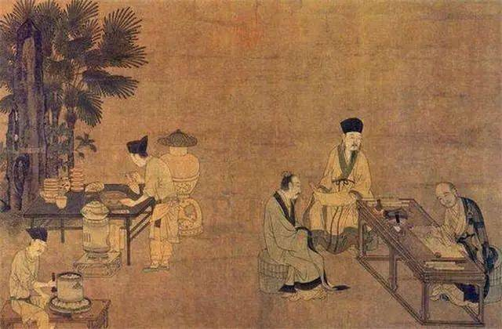

Song Dynasty
Wooden sculptures began to prevail in the Song Dynasty, and the artistic level reached the peak. The wooden sculptures of the Song Dynasty that can be seen now are often regarded as iconic collections in European, American and national museums. Song dynasty statues used artistic techniques to express the characteristics of characters in real life. Affected by the secularization of Buddhism, the Song Dynasty used secular aesthetic taste to shape the Buddha statues. The treatment of the pleated clothes was completely different from the surreal and super-idealized methods of the Tang Dynasty. It has completely separated from foreign art models and expresses the unique aesthetic taste and artistic style of the Han nation. , Has a fresh and simple naturalistic atmosphere.